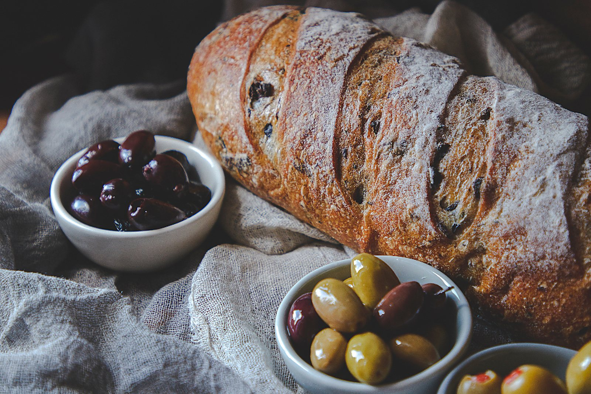
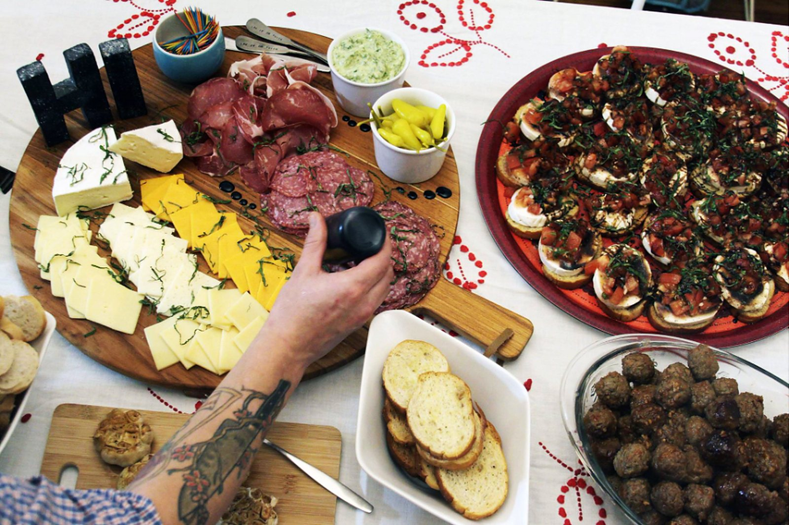
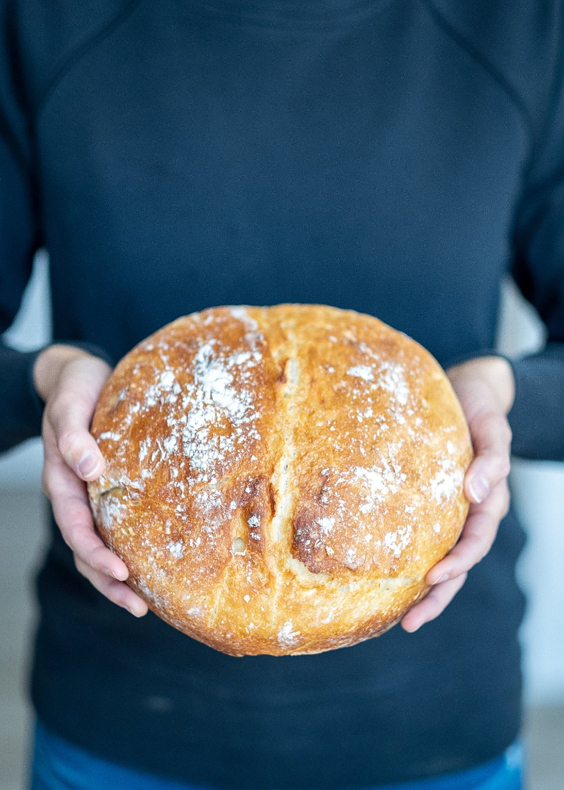
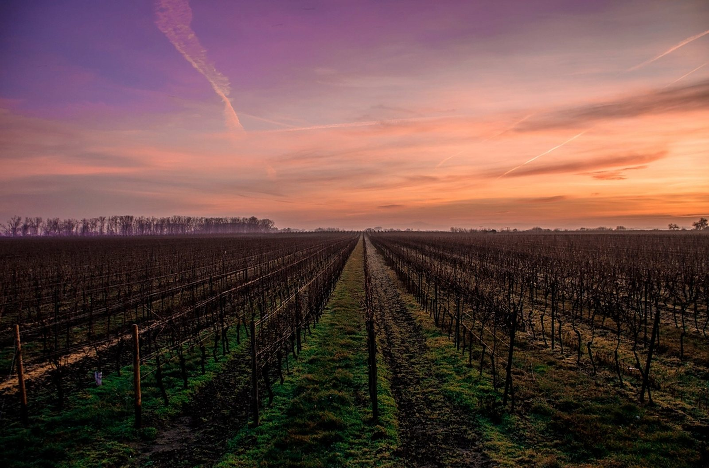

Agriturismo
Il cuore dell’agriturismo è la cucina dove Lissa trasforma i prodotti della terra del ColBel. Zucchine in agrodolce, composte di frutta, sottaceti. Sono solo alcune delle specialità artigianali che accompagnano l’esperienza di degustazione.

La produzione di salumi, è un’altra passione di Gianni. Quando in inverno le viti riposano, salami, soppresse e altri insaccati, stagionano in un’antica cantina seicentesca di Casa Teo raffrescata dai secolari gelsi. È possibile assaggiarli sia il loco, che acquistarle per il consumo domestico.

Il pane di Lissa è il compagno perfetto per tutti questi prodotti. Viene prodotto con una varietà di frumento antica “Giorgione”, seguendo tempi e metodi tramandati da generazioni, e cotto nel forno alimentato dalla legna dei nostri boschi.

Nello stesso forno e con la stessa legna durante le festività Lissa come da tradizione riscopre le ricette antiche per impastare e cucinare i gustosi panettoni natalizi, le soffici focacce pasquali e gli immancabili biscotti e crostate che ci ricordano i bei momenti passati con i nostri genitori e i nostri nonni.

Durante la bella stagione Lissa raccoglie i prodotti dell’orto per produrre passate di pomodoro, conserve in agrodolce, sottolio e sottaceto e marmellate di prugne, pesche e albicocche che allieteranno tutti i momenti dell’anno, anche quelle fredde giornate in cui le ore di luce sono poche e l’immancabile compagno sarà il crepitio del caminetto.

Ma la cucina di Lissa è sempre calda e spazia dai piatti del nostro pollame, alla selvaggina, al vegano.
L’agriturismo con menù spuntineria, apre il weekend, con un menù semplice ma territoriale, che prevede la selezione di affettati di nostra produzione, formaggi da piccole aziende locali con miele e marmellate, pane cotto in forno a legna, zucchine del nostro orto in agrodolce, e spuntini cotti. il tutto accompagnato da una o più delle vostre bollicine preferite. Per i vostri eventi speciali, è invece possibile prenotare e concordare un menù più adatto alle vostre esigenze. La selezione dei nostri vini è sempre disponibile per l’acquisto in loco.
Per le vostre occasioni più speciali, potete aggiungere i primi di stagione realizzati con i nostri prodotti e/o piatti di carne. Per vedere il nostro menu: clicca qui.
Per prenotare la tua esperienza o per ulteriore informazioni, chiama: